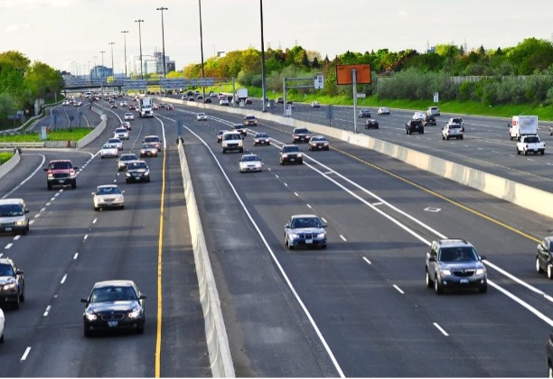
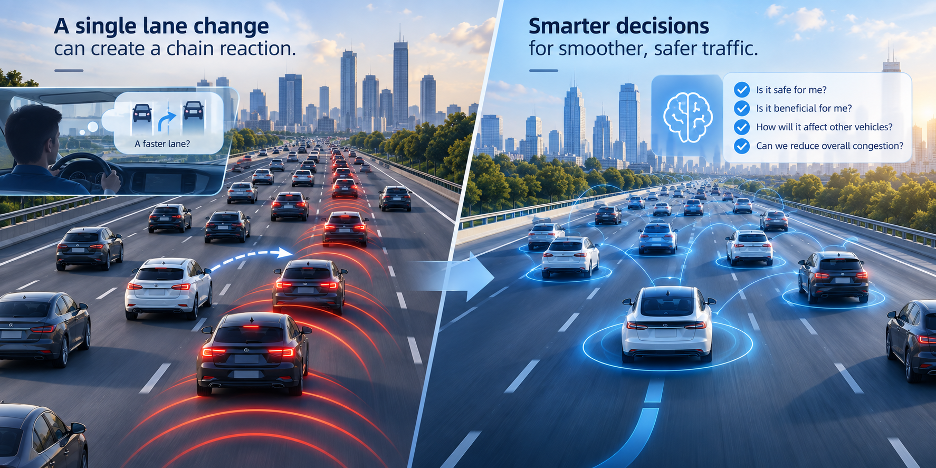

The Ripple Effects of Everyday Lane Changing
Almost every driver has had this experience: the lane next to you seems to be moving faster, so you spot a safe gap, signal, and smoothly move over. The entire manoeuvre takes only a few seconds. From the driver’s perspective, it is simply a routine adjustment on the road.
What most drivers do not see, however, is the chain reaction that can follow. When a vehicle enters a new lane, vehicles behind it may need to slow down or adjust their spacing. Those adjustments can then affect the next vehicles in line, allowing a seemingly minor disturbance to travel backward through the traffic stream—or “upstream,” in traffic-flow terminology. This is the ripple effect of lane changing: a local disturbance created by one vehicle can propagate through the traffic around it.
How many vehicles can a single discretionary lane change affect? How long can that disturbance persist? And what does it ultimately mean for traffic efficiency and safety? Professor Zhengbing He, Professor in Autonomous and Intelligent Systems at the University of Nottingham Ningbo China, and his collaborators have been investigating these everyday but surprisingly complex questions through a series of studies, progressing from identifying the extent and duration of a single lane change’s impact to quantifying its broader effects on traffic operations [1,2].

One Lane Change, a Chain Reaction Through Traffic
In 2023, the team published a study in IEEE Transactions on Intelligent Transportation Systems [1], addressing a fundamental question: how far does the impact of an ordinary discretionary lane change actually extend? Here, a “discretionary lane change” refers to a lane change that a driver chooses to make in response to traffic conditions—for example, in search of better driving conditions—rather than one that is required because of an exit, a lane ending, or another route constraint.
Using high-resolution vehicle trajectory data, the researchers developed an analytical framework to identify which vehicles were affected by a single lane change and how long those effects lasted. Under the traffic conditions examined, with lane-changing vehicles travelling at approximately 6–20 m/s (22–72 km/h), a typical discretionary lane change affected around four to five following vehicles on average, with an average impact duration of approximately 12–13 seconds.
These numbers make visible a microscopic traffic process that is difficult to observe from behind the wheel. A lane change is not simply a momentary interaction between two vehicles. A small movement by one vehicle can prompt the vehicle behind it to adjust its speed and spacing; that response can then influence the next vehicle, and so on. A manoeuvre lasting only a few seconds can therefore leave a disturbance in the traffic stream that persists for considerably longer.
This perspective also helps us understand a familiar feature of road traffic: sometimes vehicles slow down or begin moving in stop-and-go patterns even when there is no obvious accident, traffic signal, or physical obstruction ahead. Lane changing is by no means the only cause of such fluctuations, but traffic flow is an interconnected dynamic system. Acceleration, braking and lane-changing decisions alter local traffic conditions, and these small disturbances can propagate from vehicle to vehicle. Studying a single lane change therefore provides a concrete way to understand how local disturbances emerge, spread and eventually dissipate within a traffic stream.
From Identifying the Impact to Measuring Its Magnitude
Knowing how many vehicles are affected, and for how long, is only the first part of the story. In real traffic, the effects are not the same for every vehicle. When a vehicle enters its target lane, it occupies space within that traffic stream and may cause following vehicles to slow down or adjust their spacing. At the same time, its departure from the original lane releases space, potentially giving vehicles behind it more favourable driving conditions. Changes in speed and spacing can also alter safety-related conditions within the surrounding traffic.
The team’s follow-up study, published in September 2026 in Accident Analysis & Prevention [2], takes the next step: moving from identifying the extent of a lane change’s impact to quantifying its magnitude. The central question becomes: how large are the changes in traffic efficiency and safety associated with the disturbance created by a single lane change?
Answering this question is technically challenging because real traffic is constantly fluctuating. If a vehicle slows down after another vehicle changes lanes, the slowdown cannot automatically be attributed to that lane change. The vehicle may already have been decelerating, or it may be responding to traffic conditions further upstream. To reduce such misattribution, the new framework uses information on vehicle behaviour before the lane change together with local dynamic reference trajectories to distinguish, as far as possible, normal background fluctuations from changes associated with the lane-changing event. This makes it possible to move beyond asking whether a vehicle was affected and towards estimating the cumulative changes in traffic efficiency and safety associated with that event.
The results show that the same lane change can affect the two lanes differently. In the target lane—the lane the vehicle enters—the identified impact lasted an average of 23.8 seconds and involved approximately 5.6 following vehicles, with an average loss in traffic efficiency. In the original lane—the lane the vehicle leaves—the impact lasted around 25 seconds and involved approximately 5.3 following vehicles, while the average effect on efficiency was an improvement. Safety-related exposure measures increased on average in both lanes. These figures represent average patterns across the events examined rather than a universal outcome for every lane change; in particular, the efficiency and safety effects in the original lane varied substantially across individual events.
What Is Best for One Vehicle May Not Be Best for Traffic as a Whole
Simply knowing that a lane change affects five or six vehicles for more than 20 seconds is only part of what makes these findings interesting. Their broader significance lies in changing the scale at which we think about driving decisions.
From an individual driver’s perspective, the logic of changing lanes is straightforward: if the neighbouring lane appears faster, there is a sufficient gap, and the manoeuvre can be completed safely, changing lanes may seem like a sensible choice. But when the perspective expands from one vehicle to the traffic system around it, the picture becomes more complicated. Better driving conditions for one vehicle may coincide with several vehicles in another lane having to slow down or adjust their spacing. A decision completed in a few seconds can leave effects that persist for more than 20 seconds downstream of that decision.
In other words, a choice that is advantageous for an individual vehicle does not necessarily produce the same benefit for the traffic system as a whole. This does not mean that lane changing is inherently undesirable. Rather, it raises a different question: when evaluating a driving decision, should we consider only what happens to the vehicle making that decision, or should we also account for what happens to the vehicles around it?
This is where quantification becomes particularly important. It is relatively easy to measure whether an individual vehicle travels faster after changing lanes. What has traditionally been much harder to measure is the less visible effect that the same manoeuvre imposes on surrounding traffic. By identifying which vehicles are affected, how long the effects persist, and how efficiency and safety conditions change, this line of research begins to make those previously hidden system-level effects measurable. The objective is not simply to classify a lane change as “good” or “bad,” but to broaden the way a driving decision can be evaluated—from the outcome for one vehicle to its consequences for the surrounding traffic system.
This perspective could become increasingly relevant as automated vehicles become more common. Today, an automated vehicle considering a lane change naturally needs to ask whether the manoeuvre is safe, whether sufficient space is available, and whether it improves its own driving conditions. But as more vehicles gain the ability to make autonomous decisions, a deeper question emerges: do we want roads filled with individually optimised intelligent vehicles, or a traffic system in which those vehicles can also coordinate their decisions for better overall performance?
Consider a future automated vehicle faced with two equally safe lane-changing options that provide similar benefits to itself. One might cause several following vehicles to brake, while the other might create much less disturbance. If such differences can eventually be estimated reliably, the vehicle could potentially incorporate them into its decision-making—not only asking, “Can I make this lane change?” but also, “What effect will my decision have on the traffic around me?” The same type of information could eventually contribute to research on connected and cooperative vehicles, intelligent lane management and network-level traffic control. These are potential directions enabled by this line of research, rather than functions already demonstrated in the two studies.
From the 2023 study identifying who is affected and for how long, to the latest work quantifying how much they are affected and in what ways, the two studies progressively reveal an important but often invisible feature of traffic: one vehicle’s decision can reshape the movement of several vehicles behind it for tens of seconds.
Road traffic may appear to consist of thousands of vehicles making independent decisions, but in reality it is a highly interconnected and dynamic system. We are now beginning to measure the ripples created by something as ordinary as a single lane change. As vehicles become increasingly capable of sensing, predicting and making decisions for themselves, the meaning of vehicle intelligence may also need to expand: not only enabling each vehicle to travel safely and efficiently, but also enabling it to anticipate and reduce the disturbance its own decisions create for the traffic system around it.
